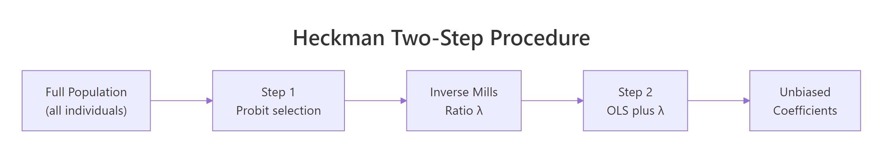
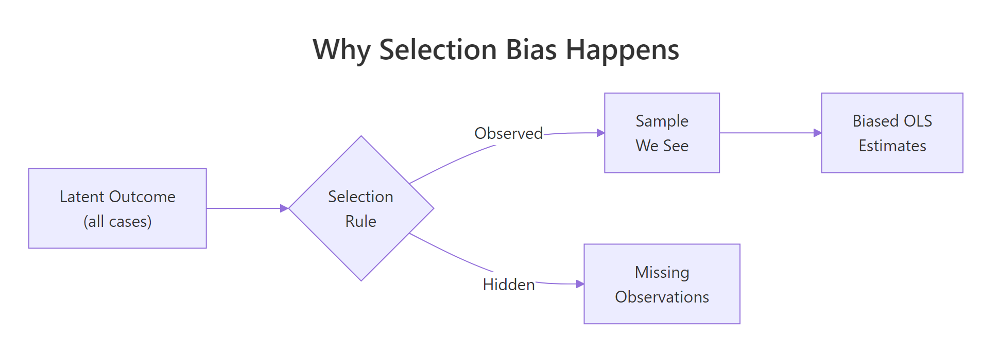

Heckman Selection Model in R: Correct for Non-Random Sample Selection
The Heckman selection model fits a linear outcome equation when the sample you observe is not a random draw from the population, like wages reported only for employed workers or ratings only from people who bought a product. It corrects the bias by modelling selection as a probit, then adding the inverse Mills ratio from that probit to the outcome regression.
Why do we need the Heckman selection model?
Imagine you want to know how ability affects wages, but you can only measure wages for people who are employed. Employed people are not a random subset of the population. They tend to have more drive, skills, and opportunities, and those same traits push up their wages too. Ordinary least squares on this selected sample therefore understates the true effect. A small simulation makes the bias impossible to miss in a single run.
The true ability coefficient is 0.5, but naive OLS returns 0.368, a 26% underestimate. The reason is that the error term in the wage equation is correlated with the unobserved driver of employment: capable people are over-represented among the employed, so any ability they have buys less wage-gap in the selected sample than it does in the population. OLS mistakes this for a weaker effect.
Try it: Tighten the link between ability and employment by squaring it. Does the bias get worse? Call the new fit ex_fit.
Click to reveal solution
Explanation: Tightening the selection rule means employment is driven more strongly by ability, so the observed-wage subset is even more homogeneous in ability. OLS sees less variation in ability and attributes less of the wage gap to it.
How does the two-step Heckman procedure work?
The fix splits the problem into two models. Step 1 is a probit that predicts selection (employed or not) from observed covariates. Step 2 adds a one-number summary from that probit, the inverse Mills ratio $\lambda$, as an extra regressor in the wage equation. Once $\lambda$ is in the model, the residual correlation between selection and outcome is absorbed, and the remaining coefficients are unbiased.

Figure 1: The two-step Heckman procedure: estimate probit, compute the inverse Mills ratio, then augment OLS.
The formulas capture this intuition in two lines. The selection equation models the probability of being observed:
$$\Pr(D_i = 1 \mid Z_i) = \Phi(Z_i \gamma)$$
The outcome equation, restricted to the observed sample, augments the usual regression with the correction term:
$$E[Y_i \mid X_i, D_i = 1] = X_i \beta + \rho \sigma_u \lambda(Z_i \gamma)$$
Where:
- $D_i = 1$ means observation $i$ is in the sample (e.g., employed)
- $Z_i$ = covariates in the selection probit
- $\gamma$ = probit coefficients
- $\Phi$ = standard normal CDF, $\phi$ = standard normal PDF
- $\lambda(z) = \phi(z) / \Phi(z)$ = the inverse Mills ratio
- $\rho$ = correlation between the selection and outcome errors
- $\sigma_u$ = standard deviation of the outcome equation error
The coefficient on $\lambda$ in Step 2 is $\rho \sigma_u$, so a t-test on that coefficient is a direct test of whether selection bias matters at all. We can replicate the whole recipe in base R without any extra package.
The ability coefficient is now 0.499, right on top of the true 0.5. The imr coefficient is negative and sizeable, confirming that selection pushes observed wages upward in a way the covariates alone cannot explain. The only unfinished business is standard errors: the OLS standard errors in Step 2 are wrong because imr was itself estimated in Step 1. We address that in the next section by using a package that handles both steps jointly.
sampleSelection::selection(), which apply the correct Heckman-Greene correction.Try it: Compute the inverse Mills ratio at z_hat = 0 and z_hat = 2 by hand. Which selection zone gives a larger IMR?
Click to reveal solution
Explanation: When z_hat is small (near zero), the observation is borderline, so the probit density is high relative to the cumulative probability, and $\lambda$ is large. When z_hat is large and positive, selection is almost certain and $\lambda$ shrinks toward zero.
How do you fit Heckman in R with sampleSelection?
The sampleSelection package wraps both steps into a single call, gives correct standard errors, and cleanly reports the selection and outcome equations side by side. The workhorse function is selection(), which takes two formulas (selection, outcome) and a method ("2step" for the classic Heckman two-step or "ml" for full maximum likelihood).
The numbers match the manual calculation exactly because selection() runs the same algorithm internally. The win is in the reporting: summary(heckit_fit) prints probit and outcome tables with the right standard errors, z-statistics, p-values, and an estimate of $\rho$ without extra work.
invMillsRatio row in the summary. Its t-statistic is your selection diagnostic. A large absolute t means the outcome equation's unobserved drivers are correlated with selection, so the correction is doing meaningful work. A near-zero t suggests plain OLS on the selected sample was fine.Try it: Fit a second Heckman model where the outcome depends on ability + I(ability^2). Does the linear coefficient move?
Click to reveal solution
Explanation: The true data-generating process is linear in ability, so the I(ability^2) coefficient is close to zero and the linear term stays near 0.5. This is a quick sanity check that the correction is not inventing non-linearity that does not exist.
What does the exclusion restriction require?
Identification of the Heckman model hinges on one rule: at least one variable that appears in the selection probit should be absent from the outcome equation. This is the exclusion restriction. It gives the model information about selection that it cannot also attribute to the outcome, and it is the difference between a credible correction and a fragile one based only on distributional assumptions.
The standard error on ability is nearly twice as large without the exclusion variable. That is the identification cost: without a variable that varies selection but not the outcome, the model is left to separate the two forces using only the non-linearity of the inverse Mills ratio, which is a weak lever. In real projects, spend time finding a credible exclusion variable before you trust a Heckman correction.
Try it: Which of these would make a plausible exclusion restriction for modelling wages conditional on employment: (a) years of education, (b) local unemployment rate, (c) age?
Click to reveal solution
Explanation: Local unemployment rate shifts the probability of being employed (selection) but does not directly raise or lower an employed person's wage conditional on having a job. Education and age, in contrast, are classic wage determinants, so excluding them from the outcome would be wrong.
When should you prefer MLE over the two-step estimator?
The two-step estimator is intuitive and fast, but it is not statistically efficient. Maximum likelihood estimation fits both equations jointly, which uses the information in the data more fully and produces tighter standard errors. The price is a harder optimization that can fail to converge on noisy data. On clean data, always prefer MLE; on tricky data, start with the two-step, then try MLE once you trust the specification.
Both estimators return essentially the same point estimate, which is a healthy sign that the two-step was well-identified. The MLE standard error is about 10% smaller, which translates to tighter confidence intervals on the coefficient you report. On larger samples or heavier selection, the MLE advantage grows.
method = "ml". If selection() prints "convergence failed" or returns coefficients that swing wildly between runs, the likelihood surface is flat or multi-modal. Usually this means the exclusion restriction is weak, or the two errors are almost independent so there is little for $\rho$ to do. Fall back to two-step and report both.Try it: Fit the same MLE model but with starting values drawn from the two-step coefficients.
Click to reveal solution
Explanation: Warm-starting the optimizer from the two-step coefficients is a classic robustness trick. If the MLE converges to the same answer from a good starting point and from the default starting point, you can trust the result. Disagreement is a sign to investigate.
How do you interpret rho and the inverse Mills ratio?
The Heckman model gives you two diagnostics beyond the usual regression table. The first is $\rho$, the correlation between the selection and outcome errors. The second is the coefficient on the inverse Mills ratio, which equals $\rho \sigma_u$. A $\rho$ far from zero means the two processes are strongly linked and the correction is doing work. A $\rho$ close to zero (or an insignificant $\lambda$) means OLS on the selected sample would have given a similar answer.

Figure 2: Selection bias happens when the observed sample is a non-random subset of the population.
The estimated $\rho$ is about $-0.81$, a strong negative correlation: the unobserved drivers of employment push wages down among the employed (consistent with a floor effect, where only people who can command at least some wage bother to work). The $\lambda$ coefficient has a t-statistic of $-9.84$ with a p-value effectively zero, so selection bias is real in this data and the correction is warranted.
Try it: Look at the following heckit_ml output summary and decide: is selection correction needed?
Click to reveal solution
Explanation: A $\rho$ near zero plus an insignificant $\lambda$ (p = 0.55) means the selection and outcome errors are essentially uncorrelated, and plain OLS on the selected sample is unbiased. Applying Heckman in that case only wastes degrees of freedom and widens the confidence intervals.
Practice Exercises
Exercise 1: Heckman on the Mroz87 wage data
The sampleSelection package ships with Mroz87, a classic labor-economics dataset on 753 married women in 1975. Fit a Heckman two-step for log wages (wage) as a function of education (educ) and experience (exper), with selection (lfp, labor force participation) as a function of educ, age, number of young kids (kids5), and non-labor income (nwifeinc). Save the result to my_mroz_fit and interpret the education coefficient.
Click to reveal solution
Explanation: Each extra year of education is associated with a 10.9% higher wage for working women, after correcting for self-selection into the labor force. The invMillsRatio is small and not significant, which means in this dataset the education-wage estimate would not change much even without the correction.
Exercise 2: Diagnose whether Heckman is worth running
You observe outcomes for only 60% of a dataset and suspect selection bias. Run a full diagnostic: (a) fit naive OLS, (b) fit Heckman with the exclusion variable kids, (c) test whether $\rho$ differs from zero using the ML fit, (d) refit Heckman without the exclusion, and (e) decide whether the correction is needed. Store your final decision ("OLS" or "Heckman") in my_decision.
Click to reveal solution
Explanation: The rule of thumb is simple: use Heckman when the two diagnostics agree that selection matters. Our simulated data has rho around $-0.8$ and a tiny lambda p-value, so the correction is clearly worthwhile. On clean random samples, both diagnostics would point the other way and OLS would win.
Complete Example
Here is the full workflow in one block, comparing naive OLS, the two-step Heckman, and the MLE Heckman against the known truth.
OLS misses the true coefficient by almost 20%. Both Heckman variants hit the truth on the nose, and MLE gives the tightest standard error. That is the payoff of taking the selection process seriously: you get the right answer, with the sharpest precision the data allow.
Summary
| Estimator | When to use | Pros | Cons |
|---|---|---|---|
| Naive OLS | Random samples or $\rho \approx 0$ | Simple, well-known, no extra assumptions | Biased when selection is non-random |
| Heckman two-step | Non-random samples, quick diagnostic | Easy to fit, robust to starting values, clear IMR interpretation | SEs need Heckman-Greene correction, less efficient than MLE |
| Heckman MLE | Non-random samples, clean data | Fully efficient, direct SEs on $\rho$ | Needs joint normality, can fail to converge |
Key points to remember:
- Selection bias is an omitted variable bias where the omitted variable is "was this observation selected?"
- The two-step recipe is: probit on selection, compute inverse Mills ratio, augment OLS on observed sample.
- Identification needs an exclusion restriction: at least one variable that drives selection but not the outcome.
- Use $\rho$ and the t-statistic on the inverse Mills ratio as diagnostics. If both are near zero, skip the correction.
sampleSelection::selection()handles both steps with correct standard errors, and supports both"2step"and"ml"methods.
References
- Heckman, J. J. (1979). Sample Selection Bias as a Specification Error. Econometrica 47(1), 153-161. Link
- Toomet, O. & Henningsen, A. (2008). Sample Selection Models in R: Package
sampleSelection. Journal of Statistical Software 27(7). Link sampleSelectionpackage documentation on CRAN. Link- Wooldridge, J. M. (2010). Econometric Analysis of Cross Section and Panel Data, 2nd Edition, Chapter 19. MIT Press.
- Mroz, T. A. (1987). The Sensitivity of an Empirical Model of Married Women's Hours of Work to Economic and Statistical Assumptions. Econometrica 55(4), 765-799. Link
- Wikipedia: Heckman correction. Link
Continue Learning
- Multiple Regression in R: How to Build, Interpret, and Refine a Real Model, the parent tutorial on building, testing, and refining an OLS regression.
- Tobit Regression in R: AER Package for Censored Outcomes, the companion method for when outcomes are censored at a boundary rather than missing from a non-random subset.
- Linear Regression Assumptions in R, for checking the assumptions that OLS relies on and learning what to do when they fail.